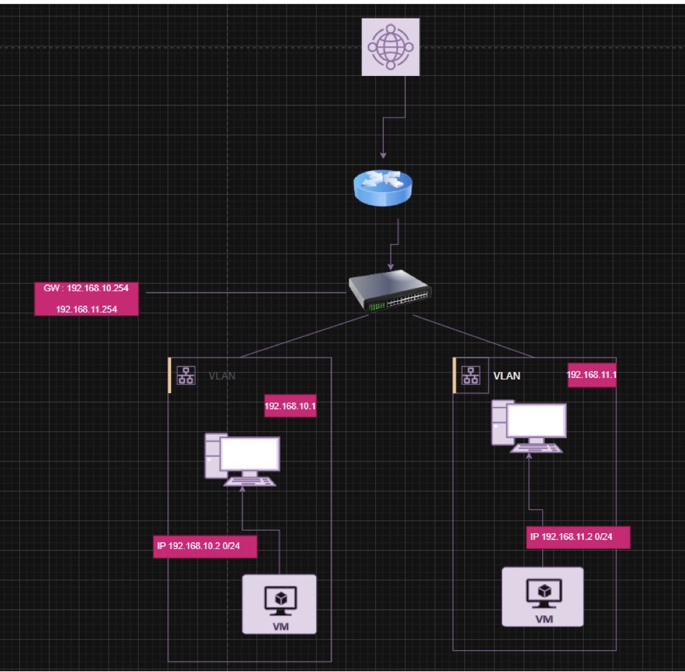
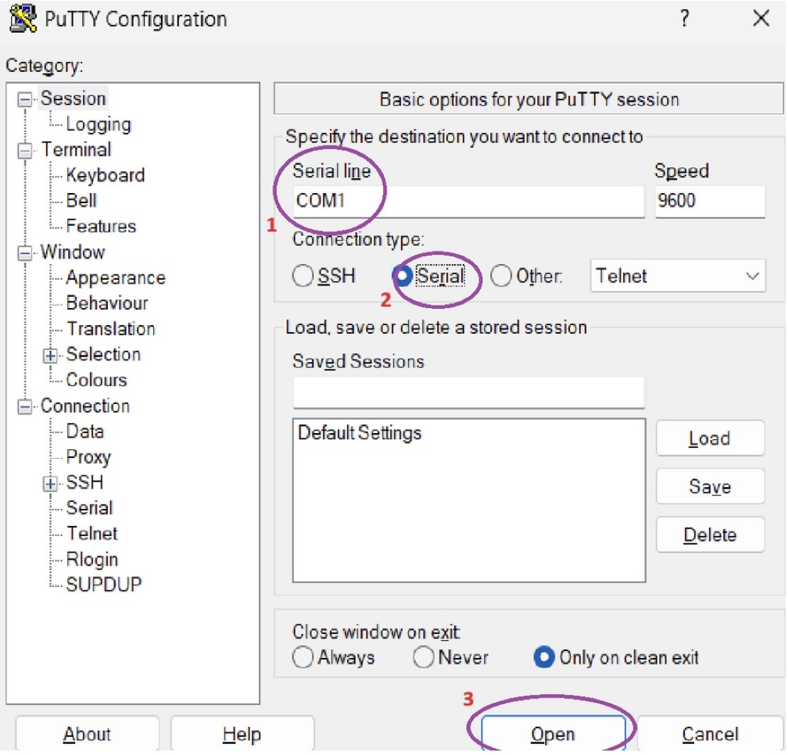
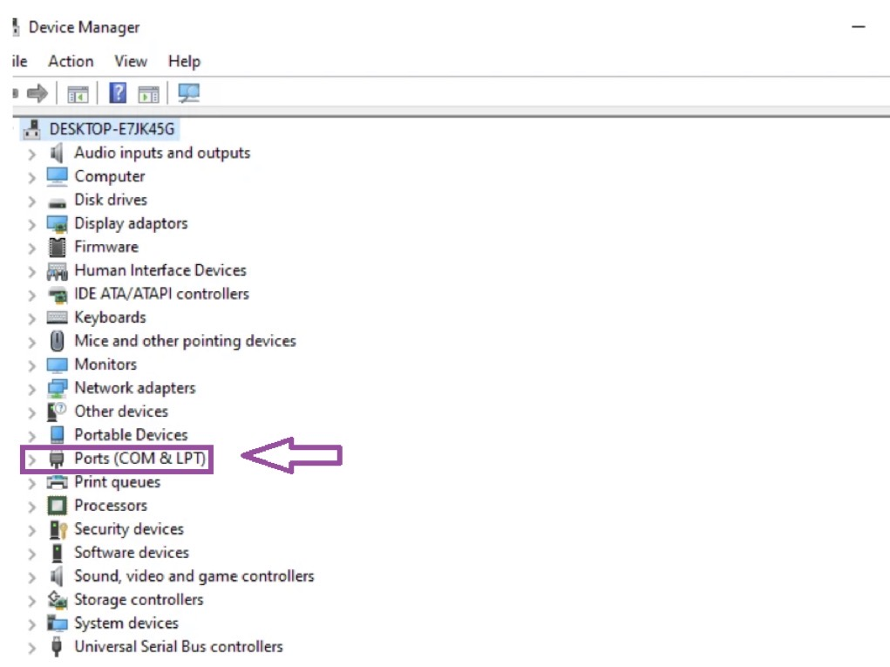
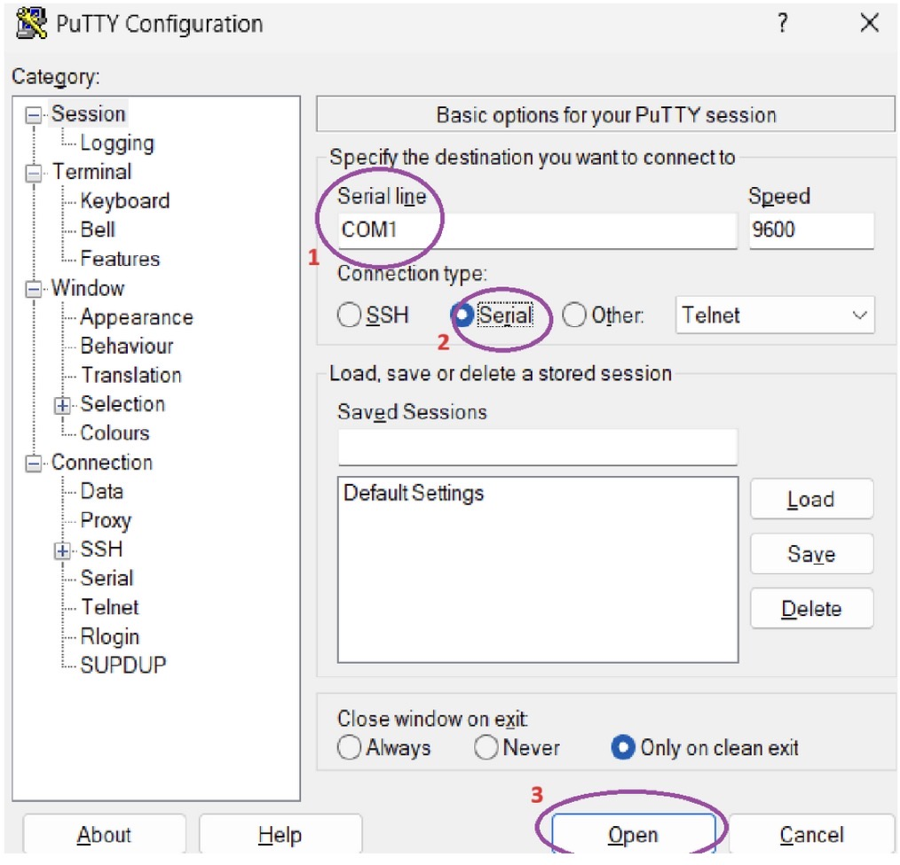
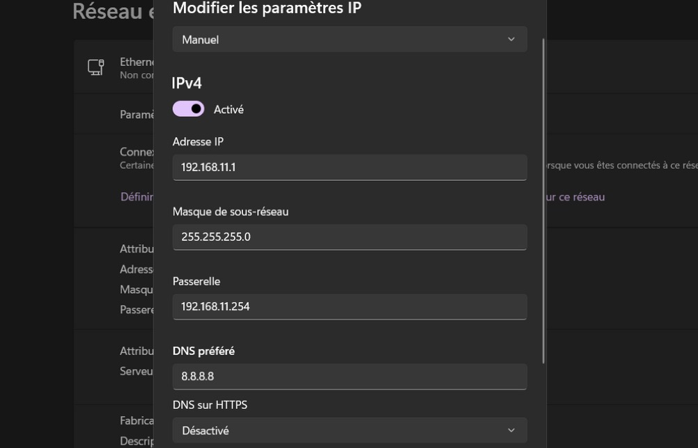
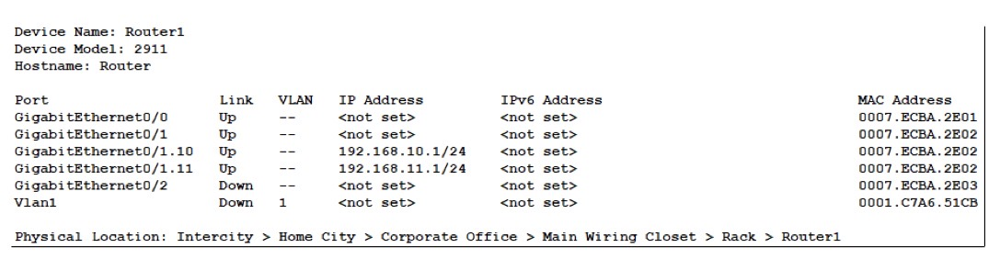
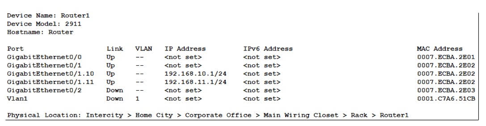
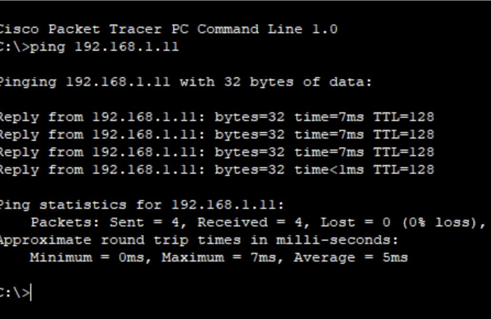

TopologieL'objectif est d'assurer et de garantir un routage inter-VLAN sécurisé entre deux réseaux locaux virtuels distincts via un routeur unique (Cisco 2911) and un switch (2950 T).

SwitchInitialisation et création des VLAN 10 et 11 sur le switch Cisco. Attribution des noms respectifs et vérification de la base de données flash.

InterfacesConfiguration des ports d'accès du switch pour lier chaque interface physique à son VLAN d'appartenance à l'aide de la commande switchport access.

TrunkingConfiguration de la liaison montante vers le routeur. Le port d'interconnexion passe en mode Trunk afin de transporter les trames étiquetées (dot1Q) de tous les VLANs.

RouteurCréation des sous-interfaces logiques sur l'interface GigabithEthernet du routeur (g0/1.10 et g0/1.11) pour encapsuler le trafic de chaque VLAN.
encapsulation dot1Q [ID_VLAN] avant de fixer l'IP.
MémoireValidation et écriture permanente des fichiers de configuration système de la mémoire volatile (Running-Config) vers la NVRAM (Startup-Config).

WANConfiguration des adresses réseaux WAN pour lier le routeur local à un second équipement distant via des réseaux de masques d'accord 255.255.255.252 (/30).

ValidationVérification finale du bon fonctionnement de l'infrastructure par des requêtes d'échos ICMP (Ping). Les tests valident le routage inter-VLAN et l'accès au WAN.